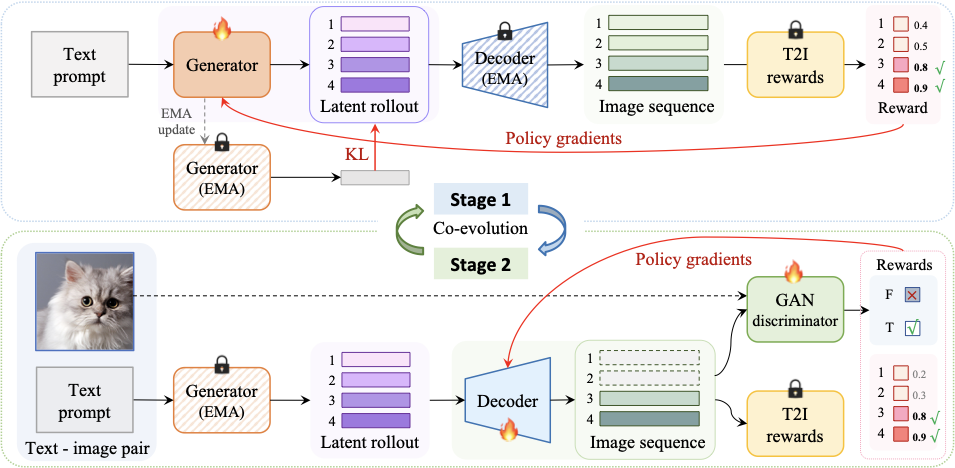

WeChat
WeChat

RankE: End-to-End Post-Training for Discrete Text-to-Image Generation with Decoder Co-Evolution
RankE presents an end-to-end post-training framework for discrete text-to-image generation, coupling generator and decoder optimization through decoder co-evolution and reward-driven training.